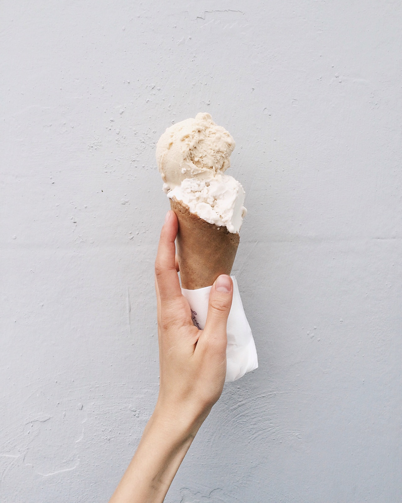
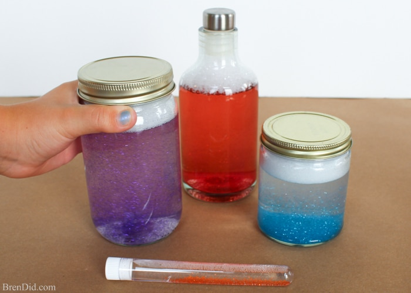
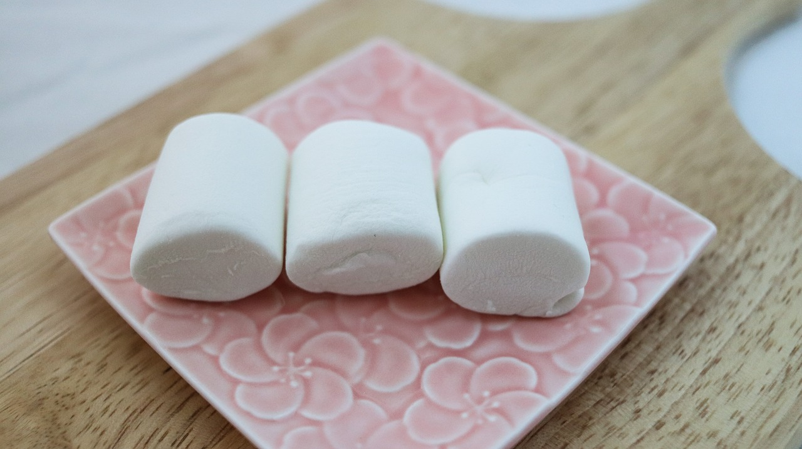

DIY PROJECTS
LEGOS (Engineering)

Estimated Amount of Time: Unlimited
Building things out of Legos helps improve your math, spatial, and motor skills. Legos improve your ability to visualize and manipulate three-dimensional objects in your mind. Also, Legos are a great way to express yourself creatively! Make anything you want out of Legos for this activity :)
ICE CREAM (Chemistry)

Estimated Amount of Time: 10-20 minutes
Water has three states: gas, liquid, and solid. Water becomes a solid at 32 degrees Farenheit (0 degrees Celsius), but if salt (sodium chloride) is present, the freezing point (temperature at which liquid → solid) lowers. In this experiment, you will add salt to ice cubes to make ice cream! This is because the salt particles will disrupt the crystalline structure of ice; they will cause the ice cubes to melt! The lower the freezing point of something, the more energy it has to absorb to melt. Thus, when you add salt to the ice cubes, their temperature drops below 32 degrees Farenheit, and they start absorbing heat from their surroundings. The process of melting ice is endothermic as it requires the absorption of heat (endo=internal, within → heat is moving IN). The ice/salt mixture will suck heat away from the ice cream mixture, making it possible to make ice cream without using a machine!
Click here for the directions
GLITTER TORNADO (Physics)

Estimated Amount of Time: 4 minutes
You will create a water vortex that looks like a mini tornado! You can do this because of centrifugal force which makes the water move in a spiral; it is a force that acts outward, away from the center of rotation, and is felt by objects moving on a curved path.
Click here for the directions
MARSHMALLOW CATAPULT (Engineering)

Estimated Amount of Time: Can take hours if you use hot glue, but if you use normal glue and rubber bands, it should not take anything longer than an hour. (Note: DO NOT use a hot glue gun unless you are being supervised by an adult.)
This project is great for anyone who is interested in engineering! You can use either skewers or popsicle sticks; it really does not matter. Also, you can either use a plastic spoon or any type of bottle cap; it might be easier to use the plastic spoon because you can just secure it by using rubber bands instead of glue.
Click here for the directions